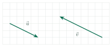
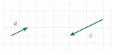
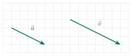
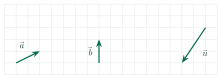
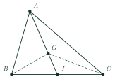
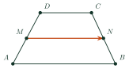
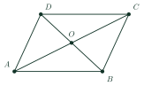
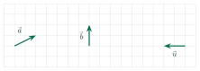
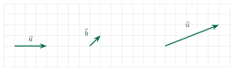

Multiplying a Vector by a NumberTích của một vectơ với một số
Grade 10 · Topic: VectorsLớp 10 · Chủ đề: Vectơ
1Lesson IntroductionGiới thiệu bài học
Learning goalsMục tiêu bài học
By the end of this lesson you can:
Sau bài học này, em có thể:
multiply a vector by a number and find its length and direction;
nhân vectơ với một số và xác định độ dài, hướng của tích của vectơ với một số;
use the midpoint and centroid vector formulas;
dùng công thức vectơ của trung điểm và trọng tâm;
express a vector in terms of two other vectors;
biểu diễn theo hai vectơ không cùng phương;
prove that three points are collinear using vectors.
chứng minh ba điểm thẳng hàng bằng vectơ.
2Mathematical VocabularyTừ vựng Toán học
scalar multiple – the vector \(k\vec a\): its length is \(|k||\vec a|\); same direction if \(k\gt0\), opposite if \(k\lt0\).
tích của vectơ với một số – vectơ \(k\vec a\) có độ dài \(|k||\vec a|\); cùng hướng với \(\vec a\) nếu \(k\gt0\), ngược hướng nếu \(k\lt0\).
scalar (a real number) – an ordinary number that multiplies a vector.
số thực (vô hướng) – số thực dùng để nhân với vectơ.
collinear points – points on one line.
ba điểm thẳng hàng – các điểm cùng nằm trên một đường thẳng.
centroid – the point where the three medians meet.
trọng tâm – giao điểm của ba đường trung tuyến của tam giác.
median – a segment from a vertex to the midpoint of the opposite side.
trung tuyến – đoạn thẳng nối đỉnh với trung điểm của cạnh đối diện.
express in terms of – write one vector using other vectors.
biểu diễn theo – viết một vectơ qua các vectơ khác.
3Useful English PhrasesCụm từ tiếng Anh thường gặp
Express \(\overrightarrow{AM}\) in terms of \(\vec a\) and \(\vec b\).
Biểu diễn \(\overrightarrow{AM}\) theo \(\vec a\) và \(\vec b\).
Prove that the three points are collinear.
Chứng minh ba điểm thẳng hàng.
\(G\) is the centroid of the triangle.
\(G\) là trọng tâm tam giác.
\(M\) lies on the segment.
\(M\) nằm trên đoạn thẳng.
Find the value of \(k\).
Tìm giá trị của \(k\).
4Prerequisite ReviewÔn tập kiến thức nền
You know the triangle rule \(\overrightarrow{AB}+\overrightarrow{BC}=\overrightarrow{AC}\) and that \(I\) is the midpoint of \(AB\) when \(\overrightarrow{IA}+\overrightarrow{IB}=\vec0\). The centroid \(G\) of a triangle divides each median in the ratio \(2:1\) from the vertex.
Em đã biết quy tắc ba điểm \(\overrightarrow{AB}+\overrightarrow{BC}=\overrightarrow{AC}\) và \(I\) là trung điểm của \(AB\) khi \(\overrightarrow{IA}+\overrightarrow{IB}=\vec0\). Trọng tâm \(G\) chia mỗi trung tuyến theo tỉ số \(2:1\) kể từ đỉnh.
5TheoryLý thuyết
5.1 Scalar multiple of a vectorTích của một vectơ với một số
DefinitionĐịnh nghĩa
For \(k\ne0\) and \(\vec a\ne\vec0\), the vector \(k\vec a\) has length \(|k|\,|\vec a|\). It has the same direction as \(\vec a\) if \(k\gt0\) and the opposite direction if \(k\lt0\). Also \(0\cdot\vec a=\vec0\) and \(k\vec0=\vec0\).
Với \(k\ne0\), \(\vec a\ne\vec0\), vectơ \(k\vec a\) có độ dài \(|k|\,|\vec a|\), cùng hướng với \(\vec a\) nếu \(k\gt0\), ngược hướng nếu \(k\lt0\). Ngoài ra \(0\cdot\vec a=\vec0\), \(k\vec0=\vec0\).
PropertiesTính chất
\(k(\vec a+\vec b)=k\vec a+k\vec b\); \((k+l)\vec a=k\vec a+l\vec a\); \(k(l\vec a)=(kl)\vec a\).
\(k(\vec a+\vec b)=k\vec a+k\vec b\); \((k+l)\vec a=k\vec a+l\vec a\); \(k(l\vec a)=(kl)\vec a\).
\(1\cdot\vec a=\vec a\) and \((-1)\vec a=-\vec a\).
\(1\cdot\vec a=\vec a\) và \((-1)\vec a=-\vec a\).
5.2 Midpoint and centroidTrung điểm và trọng tâm
FormulasCông thức
\(I\) is the midpoint of \(AB\):
\(I\) là trung điểm của \(AB\):
\(G\) is the centroid of triangle \(ABC\):
\(G\) là trọng tâm tam giác \(ABC\):
From these: \(\overrightarrow{AG}=\dfrac13(\overrightarrow{AB}+\overrightarrow{AC})\).
Suy ra: \(\overrightarrow{AG}=\dfrac13(\overrightarrow{AB}+\overrightarrow{AC})\).
5.3 Collinear vectors and collinear pointsĐiều kiện cùng phương và ba điểm thẳng hàng
ConditionsĐiều kiện
\(\vec b\) and \(\vec a\ne\vec0\) are collinear \(\iff\) there is \(k\) with \(\vec b=k\vec a\).
\(\vec b\) và \(\vec a\ne\vec0\) cùng phương \(\iff\) tồn tại số \(k\) để \(\vec b=k\vec a\).
\(A,B,C\) are collinear \(\iff\overrightarrow{AB}=k\overrightarrow{AC}\) for some \(k\).
\(A,B,C\) thẳng hàng \(\iff\overrightarrow{AB}=k\overrightarrow{AC}\) với số \(k\) nào đó.
If \(\vec a,\vec b\) are not collinear, every vector \(\vec c\) in the plane is \(\vec c=x\vec a+y\vec b\) in exactly one way.
Nếu \(\vec a,\vec b\) không cùng phương thì mọi vectơ \(\vec c\) trong mặt phẳng viết được duy nhất dưới dạng \(\vec c=x\vec a+y\vec b\).
Watch out!Lưu ý
\(|k\vec a|=|k|\,|\vec a|\): the length never has a minus sign. \(k\vec a\) with \(k\lt0\) points the other way.
\(|k\vec a|=|k|\,|\vec a|\): độ dài không bao giờ âm. Nếu \(k\lt0\) thì \(k\vec a\) ngược hướng với \(\vec a\).
6Worked ExamplesVí dụ có lời giải
ExampleVí dụ 1BasicCơ bản – Length and directionĐộ dài và hướng
\(|\vec a|=5\). Describe \(3\vec a\) and \(-2\vec a\).
\(|\vec a|=5\). Mô tả \(3\vec a\) và \(-2\vec a\).
Analysis: Length: multiply by \(|k|\). Direction: look at the sign of \(k\).
Phân tích: Độ dài: nhân với \(|k|\). Hướng: xem dấu của \(k\).
\(|3\vec a|=3\cdot5=15\), same direction as \(\vec a\).
\(|3\vec a|=3\cdot5=15\), cùng hướng với \(\vec a\).
\(|-2\vec a|=2\cdot5=10\), opposite direction.
\(|-2\vec a|=2\cdot5=10\), ngược hướng với \(\vec a\).
Lengths 15 and 10.
Độ dài lần lượt là 15 và 10.
ExampleVí dụ 2BasicCơ bản – Midpoint formulaCông thức trung điểm
\(I\) is the midpoint of \(BC\) in triangle \(ABC\). Express \(\overrightarrow{AI}\) in terms of \(\overrightarrow{AB}\) and \(\overrightarrow{AC}\).
Cho \(I\) là trung điểm \(BC\) của tam giác \(ABC\). Biểu diễn \(\overrightarrow{AI}\) theo \(\overrightarrow{AB}\) và \(\overrightarrow{AC}\).
Analysis: Use \(\overrightarrow{MB}+\overrightarrow{MC}=2\overrightarrow{MI}\) with \(M=A\).
Phân tích: Dùng \(\overrightarrow{MB}+\overrightarrow{MC}=2\overrightarrow{MI}\) với \(M=A\).
\(\overrightarrow{AB}+\overrightarrow{AC}=2\overrightarrow{AI}\).
\(\overrightarrow{AB}+\overrightarrow{AC}=2\overrightarrow{AI}\).
\(\overrightarrow{AI}=\dfrac12\overrightarrow{AB}+\dfrac12\overrightarrow{AC}\).
\(\overrightarrow{AI}=\dfrac12\overrightarrow{AB}+\dfrac12\overrightarrow{AC}\).
ExampleVí dụ 3IntermediateTrung bình – CentroidTrọng tâm
\(G\) is the centroid of triangle \(ABC\). Express \(\overrightarrow{AG}\) in terms of \(\overrightarrow{AB}\) and \(\overrightarrow{AC}\).
Cho \(G\) là trọng tâm tam giác \(ABC\). Biểu diễn \(\overrightarrow{AG}\) theo \(\overrightarrow{AB}\) và \(\overrightarrow{AC}\).
Analysis: \(G\) is on the median \(AI\) with \(AG=\dfrac23AI\).
Phân tích: \(G\) nằm trên trung tuyến \(AI\) với \(AG=\dfrac23AI\).
\(\overrightarrow{AG}=\dfrac23\overrightarrow{AI}\).
\(\overrightarrow{AG}=\dfrac23\overrightarrow{AI}\).
\(=\dfrac23\cdot\dfrac12(\overrightarrow{AB}+\overrightarrow{AC})\).
\(=\dfrac23\cdot\dfrac12(\overrightarrow{AB}+\overrightarrow{AC})\).
\(\overrightarrow{AG}=\dfrac13\overrightarrow{AB}+\dfrac13\overrightarrow{AC}\).
\(\overrightarrow{AG}=\dfrac13\overrightarrow{AB}+\dfrac13\overrightarrow{AC}\).
ExampleVí dụ 4IntermediateTrung bình – A point on a sideĐiểm trên cạnh
\(M\) is on side \(BC\) with \(\overrightarrow{BM}=\dfrac14\overrightarrow{BC}\). Express \(\overrightarrow{AM}\) in terms of \(\overrightarrow{AB}\), \(\overrightarrow{AC}\).
Cho \(M\) thuộc cạnh \(BC\) với \(\overrightarrow{BM}=\dfrac14\overrightarrow{BC}\). Biểu diễn \(\overrightarrow{AM}\) theo \(\overrightarrow{AB}\), \(\overrightarrow{AC}\).
Analysis: Go from \(A\) to \(B\), then to \(M\).
Phân tích: Đi từ \(A\) đến \(B\), rồi đến \(M\).
\(\overrightarrow{AM}=\overrightarrow{AB}+\overrightarrow{BM}=\overrightarrow{AB}+\dfrac14(\overrightarrow{AC}-\overrightarrow{AB})\).
\(\overrightarrow{AM}=\overrightarrow{AB}+\overrightarrow{BM}=\overrightarrow{AB}+\dfrac14(\overrightarrow{AC}-\overrightarrow{AB})\).
\(\overrightarrow{AM}=\dfrac34\overrightarrow{AB}+\dfrac14\overrightarrow{AC}\).
\(\overrightarrow{AM}=\dfrac34\overrightarrow{AB}+\dfrac14\overrightarrow{AC}\).
ExampleVí dụ 5AdvancedNâng cao – Collinear pointsBa điểm thẳng hàng
In triangle \(ABC\), \(\overrightarrow{AM}=\dfrac13\overrightarrow{AB}\) and \(\overrightarrow{AN}=\dfrac13\overrightarrow{AC}\). Show that \(\overrightarrow{MN}=\dfrac13\overrightarrow{BC}\), so \(MN\parallel BC\).
Cho tam giác \(ABC\) có \(\overrightarrow{AM}=\dfrac13\overrightarrow{AB}\), \(\overrightarrow{AN}=\dfrac13\overrightarrow{AC}\). Chứng minh \(\overrightarrow{MN}=\dfrac13\overrightarrow{BC}\), từ đó \(MN\parallel BC\).
Analysis: Write \(\overrightarrow{MN}=\overrightarrow{AN}-\overrightarrow{AM}\).
Phân tích: Viết \(\overrightarrow{MN}=\overrightarrow{AN}-\overrightarrow{AM}\).
\(\overrightarrow{MN}=\dfrac13\overrightarrow{AC}-\dfrac13\overrightarrow{AB}\).
\(\overrightarrow{MN}=\dfrac13\overrightarrow{AC}-\dfrac13\overrightarrow{AB}\).
\(=\dfrac13(\overrightarrow{AC}-\overrightarrow{AB})=\dfrac13\overrightarrow{BC}\).
\(=\dfrac13(\overrightarrow{AC}-\overrightarrow{AB})=\dfrac13\overrightarrow{BC}\).
So \(\overrightarrow{MN}\) and \(\overrightarrow{BC}\) are collinear: \(MN\parallel BC\) and \(MN=\dfrac13BC\).
Vậy \(\overrightarrow{MN}\) và \(\overrightarrow{BC}\) cùng phương: \(MN\parallel BC\) và \(MN=\dfrac13BC\).
7PracticeBài tập luyện tập
A. Multiple ChoiceA. Trắc nghiệm nhiều lựa chọn
\(|\vec a|=6\). Then \(|-3\vec a|=\)…
\(|\vec a|=6\). Khi đó \(|-3\vec a|=\)…
Answer: b. \(|k\vec a|=|k||\vec a|\).
Đáp án b. \(|k\vec a|=|k||\vec a|\).
M is on side BC with \(\overrightarrow{BM}=\dfrac{1}{4}\overrightarrow{BC}\). Then \(\overrightarrow{AM}=y\overrightarrow{AB}+z\overrightarrow{AC}\) with \(z=\)…
Điểm M thuộc cạnh BC với \(\overrightarrow{BM}=\dfrac{1}{4}\overrightarrow{BC}\). Khi đó \(\overrightarrow{AM}=y\overrightarrow{AB}+z\overrightarrow{AC}\) với \(z=\)…
Answer: c. \(\overrightarrow{AM}=(1-t)\overrightarrow{AB}+t\overrightarrow{AC}\) with \(t=\dfrac{1}{4}\).
Đáp án c. \(\overrightarrow{AM}=(1-t)\overrightarrow{AB}+t\overrightarrow{AC}\) với \(t=\dfrac{1}{4}\).
\(\overrightarrow{PQ}=3\,\overrightarrow{PR}\). Then \(\overrightarrow{PR}=k\,\overrightarrow{PQ}\) with \(k=\)…
\(\overrightarrow{PQ}=3\,\overrightarrow{PR}\). Khi đó \(\overrightarrow{PR}=k\,\overrightarrow{PQ}\) với \(k=\)…
Answer: b. Divide both sides by 3.
Đáp án b. Chia hai vế cho 3.
The segment \(AB\) is divided into 6 equal parts (figure). If \(\overrightarrow{MN}=k\,\overrightarrow{AB}\), then \(k=\)…
Đoạn thẳng \(AB\) được chia thành 6 phần bằng nhau (hình vẽ). Nếu \(\overrightarrow{MN}=k\,\overrightarrow{AB}\) thì \(k=\)…
Answer: d. \(MN=1\) parts, \(AB=6\) parts, same direction: \(k=\dfrac{1}{6}\).
Đáp án d. \(MN=1\) phần, \(AB=6\) phần, cùng hướng: \(k=\dfrac{1}{6}\).
In the figure, \(\vec v=k\,\vec u\). Find \(k\).

Trong hình vẽ, \(\vec v=k\,\vec u\). Tìm \(k\).
Answer: a. \(|\vec v|:|\vec u|=3:2\), opposite direction: \(k=-\dfrac{3}{2}\).
Đáp án a. \(|\vec v|:|\vec u|=3:2\), ngược hướng: \(k=-\dfrac{3}{2}\).
B. True or FalseB. Đúng hoặc sai
G is the centroid of triangle ABC. \(\overrightarrow{GA}+\overrightarrow{GB}+\overrightarrow{GC}=\vec0\).
G là trọng tâm tam giác ABC. \(\overrightarrow{GA}+\overrightarrow{GB}+\overrightarrow{GC}=\vec0\).
The centroid satisfies \(\overrightarrow{GA}+\overrightarrow{GB}+\overrightarrow{GC}=\vec0\).
Trọng tâm thỏa \(\overrightarrow{GA}+\overrightarrow{GB}+\overrightarrow{GC}=\vec0\).
If \(\vec b=-2\vec a\) with \(\vec a\ne\vec0\), then \(\vec b\) and \(\vec a\) have opposite direction.
Nếu \(\vec b=-2\vec a\) với \(\vec a\ne\vec0\) thì \(\vec b\) và \(\vec a\) ngược hướng.
The sign of \(k\) decides the direction.
Dấu của \(k\) quyết định hướng.
The segment \(AB\) is divided into 5 equal parts (figure). Then \(\overrightarrow{AM}=\dfrac{2}{5}\,\overrightarrow{AB}\).
Đoạn thẳng \(AB\) được chia thành 5 phần bằng nhau (hình vẽ). Khi đó \(\overrightarrow{AM}=\dfrac{2}{5}\,\overrightarrow{AB}\).
\(AM=2\) parts, \(AB=5\) parts, same direction: \(\overrightarrow{AM}=\dfrac{2}{5}\,\overrightarrow{AB}\).
\(AM=2\) phần, \(AB=5\) phần, cùng hướng: \(\overrightarrow{AM}=\dfrac{2}{5}\,\overrightarrow{AB}\).
C. Short AnswerC. Trả lời ngắn
\(|\vec a|=4\). Find \(|5\vec a|\).
Cho \(|\vec a|=4\). Tính \(|5\vec a|\).
Enter a number.
Nhập một số.
\(|k\vec a|=|k||\vec a|=5\cdot4=20\).
\(|k\vec a|=|k||\vec a|=5\cdot4=20\).
In triangle ABC with centroid G, the median AI has length 9. Find AG.
Tam giác ABC có trọng tâm G, trung tuyến AI dài 9. Tính AG.
Enter a number.
Nhập một số.
G divides AI so that \(AG=\dfrac23AI=\dfrac23\cdot9=6\).
G chia AI sao cho \(AG=\dfrac23AI=\dfrac23\cdot9=6\).
A. Multiple ChoiceA. Trắc nghiệm nhiều lựa chọn
\(|\vec a|=8\). Then \(|5\vec a|=\)…
\(|\vec a|=8\). Khi đó \(|5\vec a|=\)…
Answer: b. \(|k\vec a|=|k||\vec a|\).
Đáp án b. \(|k\vec a|=|k||\vec a|\).
M is on side BC with \(\overrightarrow{BM}=\dfrac{2}{5}\overrightarrow{BC}\). Then \(\overrightarrow{AM}=y\overrightarrow{AB}+z\overrightarrow{AC}\) with \(z=\)…
Điểm M thuộc cạnh BC với \(\overrightarrow{BM}=\dfrac{2}{5}\overrightarrow{BC}\). Khi đó \(\overrightarrow{AM}=y\overrightarrow{AB}+z\overrightarrow{AC}\) với \(z=\)…
Answer: c. \(\overrightarrow{AM}=(1-t)\overrightarrow{AB}+t\overrightarrow{AC}\) with \(t=\dfrac{2}{5}\).
Đáp án c. \(\overrightarrow{AM}=(1-t)\overrightarrow{AB}+t\overrightarrow{AC}\) với \(t=\dfrac{2}{5}\).
\(\overrightarrow{PQ}=-2\,\overrightarrow{PR}\). Then \(\overrightarrow{PR}=k\,\overrightarrow{PQ}\) with \(k=\)…
\(\overrightarrow{PQ}=-2\,\overrightarrow{PR}\). Khi đó \(\overrightarrow{PR}=k\,\overrightarrow{PQ}\) với \(k=\)…
Answer: c. Divide both sides by -2.
Đáp án c. Chia hai vế cho -2.
The segment \(AB\) is divided into 8 equal parts (figure). If \(\overrightarrow{NA}=k\,\overrightarrow{MB}\), then \(k=\)…
Đoạn thẳng \(AB\) được chia thành 8 phần bằng nhau (hình vẽ). Nếu \(\overrightarrow{NA}=k\,\overrightarrow{MB}\) thì \(k=\)…
Answer: a. \(NA=5\) parts, \(MB=7\) parts, opposite direction: \(k=-\dfrac{5}{7}\).
Đáp án a. \(NA=5\) phần, \(MB=7\) phần, ngược hướng: \(k=-\dfrac{5}{7}\).
Using the grid, the number \(k\) with \(\vec v=k\,\vec u\) is…

Dựa vào lưới ô vuông, số \(k\) thỏa mãn \(\vec v=k\,\vec u\) là…
Answer: b. \(|\vec v|:|\vec u|=2:1\), opposite direction: \(k=-2\).
Đáp án b. \(|\vec v|:|\vec u|=2:1\), ngược hướng: \(k=-2\).
B. True or FalseB. Đúng hoặc sai
G is the centroid of triangle ABC. \(\overrightarrow{GA}+\overrightarrow{GB}+\overrightarrow{GB}=\vec0\).
G là trọng tâm tam giác ABC. \(\overrightarrow{GA}+\overrightarrow{GB}+\overrightarrow{GB}=\vec0\).
The centroid satisfies \(\overrightarrow{GA}+\overrightarrow{GB}+\overrightarrow{GC}=\vec0\).
Trọng tâm thỏa \(\overrightarrow{GA}+\overrightarrow{GB}+\overrightarrow{GC}=\vec0\).
If \(\vec b=3\vec a\) with \(\vec a\ne\vec0\), then \(\vec b\) and \(\vec a\) have the same direction.
Nếu \(\vec b=3\vec a\) với \(\vec a\ne\vec0\) thì \(\vec b\) và \(\vec a\) cùng hướng.
The sign of \(k\) decides the direction.
Dấu của \(k\) quyết định hướng.
In the figure (\(AB\) is cut into 4 equal parts), \(\overrightarrow{AM}=\dfrac{3}{4}\,\overrightarrow{AB}\).
Trong hình (\(AB\) được chia thành 4 phần bằng nhau), \(\overrightarrow{AM}=\dfrac{3}{4}\,\overrightarrow{AB}\).
\(AM=3\) parts, \(AB=4\) parts, same direction: \(\overrightarrow{AM}=\dfrac{3}{4}\,\overrightarrow{AB}\).
\(AM=3\) phần, \(AB=4\) phần, cùng hướng: \(\overrightarrow{AM}=\dfrac{3}{4}\,\overrightarrow{AB}\).
C. Short AnswerC. Trả lời ngắn
\(|\vec a|=10\). Find \(|-\dfrac{3}{2}\vec a|\).
Cho \(|\vec a|=10\). Tính \(|-\dfrac{3}{2}\vec a|\).
Enter a number.
Nhập một số.
\(|k\vec a|=|k||\vec a|=\dfrac{3}{2}\cdot10=15\).
\(|k\vec a|=|k||\vec a|=\dfrac{3}{2}\cdot10=15\).
In triangle ABC with centroid G, the median AI has length 12. Find AG.
Tam giác ABC có trọng tâm G, trung tuyến AI dài 12. Tính AG.
Enter a number.
Nhập một số.
G divides AI so that \(AG=\dfrac23AI=\dfrac23\cdot12=8\).
G chia AI sao cho \(AG=\dfrac23AI=\dfrac23\cdot12=8\).
A. Multiple ChoiceA. Trắc nghiệm nhiều lựa chọn
\(|\vec a|=12\). Then \(|-\dfrac{1}{2}\vec a|=\)…
\(|\vec a|=12\). Khi đó \(|-\dfrac{1}{2}\vec a|=\)…
Answer: a. \(|k\vec a|=|k||\vec a|\).
Đáp án a. \(|k\vec a|=|k||\vec a|\).
M is on side BC with \(\overrightarrow{BM}=\dfrac{3}{7}\overrightarrow{BC}\). Then \(\overrightarrow{AM}=y\overrightarrow{AB}+z\overrightarrow{AC}\) with \(z=\)…
Điểm M thuộc cạnh BC với \(\overrightarrow{BM}=\dfrac{3}{7}\overrightarrow{BC}\). Khi đó \(\overrightarrow{AM}=y\overrightarrow{AB}+z\overrightarrow{AC}\) với \(z=\)…
Answer: c. \(\overrightarrow{AM}=(1-t)\overrightarrow{AB}+t\overrightarrow{AC}\) with \(t=\dfrac{3}{7}\).
Đáp án c. \(\overrightarrow{AM}=(1-t)\overrightarrow{AB}+t\overrightarrow{AC}\) với \(t=\dfrac{3}{7}\).
\(\overrightarrow{PQ}=4\,\overrightarrow{PR}\). Then \(\overrightarrow{PR}=k\,\overrightarrow{PQ}\) with \(k=\)…
\(\overrightarrow{PQ}=4\,\overrightarrow{PR}\). Khi đó \(\overrightarrow{PR}=k\,\overrightarrow{PQ}\) với \(k=\)…
Answer: b. Divide both sides by 4.
Đáp án b. Chia hai vế cho 4.
The segment \(AB\) is divided into 4 equal parts (figure). If \(\overrightarrow{BM}=k\,\overrightarrow{NA}\), then \(k=\)…
Đoạn thẳng \(AB\) được chia thành 4 phần bằng nhau (hình vẽ). Nếu \(\overrightarrow{BM}=k\,\overrightarrow{NA}\) thì \(k=\)…
Answer: d. \(BM=2\) parts, \(NA=3\) parts, same direction: \(k=\dfrac{2}{3}\).
Đáp án d. \(BM=2\) phần, \(NA=3\) phần, cùng hướng: \(k=\dfrac{2}{3}\).
The vectors in the figure satisfy \(\vec v=k\,\vec u\). Then \(k=\)…

Hai vectơ trong hình thỏa mãn \(\vec v=k\,\vec u\). Khi đó \(k=\)…
Answer: d. \(|\vec v|:|\vec u|=3:2\), same direction: \(k=\dfrac{3}{2}\).
Đáp án d. \(|\vec v|:|\vec u|=3:2\), cùng hướng: \(k=\dfrac{3}{2}\).
B. True or FalseB. Đúng hoặc sai
G is the centroid of triangle ABC. \(\overrightarrow{GA}+\overrightarrow{GB}+\overrightarrow{GA}=\vec0\).
G là trọng tâm tam giác ABC. \(\overrightarrow{GA}+\overrightarrow{GB}+\overrightarrow{GA}=\vec0\).
The centroid satisfies \(\overrightarrow{GA}+\overrightarrow{GB}+\overrightarrow{GC}=\vec0\).
Trọng tâm thỏa \(\overrightarrow{GA}+\overrightarrow{GB}+\overrightarrow{GC}=\vec0\).
If \(\vec b=-\dfrac{1}{3}\vec a\) with \(\vec a\ne\vec0\), then \(\vec b\) and \(\vec a\) have the same direction.
Nếu \(\vec b=-\dfrac{1}{3}\vec a\) với \(\vec a\ne\vec0\) thì \(\vec b\) và \(\vec a\) cùng hướng.
The sign of \(k\) decides the direction.
Dấu của \(k\) quyết định hướng.
From the figure with 5 equal parts, \(\overrightarrow{AM}=\dfrac{1}{5}\,\overrightarrow{AB}\).
Theo hình có 5 phần bằng nhau, \(\overrightarrow{AM}=\dfrac{1}{5}\,\overrightarrow{AB}\).
\(AM=1\) parts, \(AB=5\) parts, same direction: \(\overrightarrow{AM}=\dfrac{1}{5}\,\overrightarrow{AB}\).
\(AM=1\) phần, \(AB=5\) phần, cùng hướng: \(\overrightarrow{AM}=\dfrac{1}{5}\,\overrightarrow{AB}\).
C. Short AnswerC. Trả lời ngắn
\(|\vec a|=9\). Find \(|-\dfrac{4}{3}\vec a|\).
Cho \(|\vec a|=9\). Tính \(|-\dfrac{4}{3}\vec a|\).
Enter a number.
Nhập một số.
\(|k\vec a|=|k||\vec a|=\dfrac{4}{3}\cdot9=12\).
\(|k\vec a|=|k||\vec a|=\dfrac{4}{3}\cdot9=12\).
In triangle ABC with centroid G, the median AI has length 15. Find AG.
Tam giác ABC có trọng tâm G, trung tuyến AI dài 15. Tính AG.
Enter a number.
Nhập một số.
G divides AI so that \(AG=\dfrac23AI=\dfrac23\cdot15=10\).
G chia AI sao cho \(AG=\dfrac23AI=\dfrac23\cdot15=10\).
D. Self-practice: Multiple ChoiceD. Tự luyện: trắc nghiệm
In the figure, the vector \(\vec u\) equals…

Trong hình vẽ, vectơ \(\vec u\) bằng…
Answer: c. Check by counting squares: \(-\vec a-\vec b\) gives \((-2;\,-3)\).
Đáp án c. Kiểm tra bằng cách đếm ô: \(-\vec a-\vec b\) cho \((-2;\,-3)\).
\(G\) is the centroid of triangle \(ABC\) and \(I\) is the midpoint of \(BC\) (figure). Then \(\overrightarrow{AG}=\)…

\(G\) là trọng tâm tam giác \(ABC\), \(I\) là trung điểm của \(BC\) (hình vẽ). Khi đó \(\overrightarrow{AG}=\)…
Answer: c. \(\overrightarrow{AI}=\dfrac12(\overrightarrow{AB}+\overrightarrow{AC})\) and \(\overrightarrow{AG}=\dfrac23\overrightarrow{AI}\).
Đáp án c. \(\overrightarrow{AI}=\dfrac12(\overrightarrow{AB}+\overrightarrow{AC})\) và \(\overrightarrow{AG}=\dfrac23\overrightarrow{AI}\).
A student claims "\(\vec a\) and \(\vec b\) are collinear, so there is a number \(k\) with \(\vec b=k\vec a\)." Which comment is correct?
Một bạn khẳng định "\(\vec a\) và \(\vec b\) cùng phương nên có số \(k\) để \(\vec b=k\vec a\)." Nhận xét nào đúng?
Answer: b. Wrong when \(\vec a=\vec0\) and \(\vec b\ne\vec0\); it needs \(\vec a\ne\vec0\).
Đáp án b. Sai khi \(\vec a=\vec0\), \(\vec b\ne\vec0\); cần thêm \(\vec a\ne\vec0\).
The point \(M\) satisfies \(\overrightarrow{MA}+2\overrightarrow{MB}=\vec0\). Then \(\overrightarrow{AM}=k\,\overrightarrow{AB}\) with \(k=\)…
Điểm \(M\) thỏa mãn \(\overrightarrow{MA}+2\overrightarrow{MB}=\vec0\). Khi đó \(\overrightarrow{AM}=k\,\overrightarrow{AB}\) với \(k=\)…
Answer: c. \(\overrightarrow{MB}=\overrightarrow{MA}+\overrightarrow{AB}\), so \(3\overrightarrow{MA}+2\overrightarrow{AB}=\vec0\) and \(\overrightarrow{AM}=\dfrac{2}{3}\overrightarrow{AB}\).
Đáp án c. \(\overrightarrow{MB}=\overrightarrow{MA}+\overrightarrow{AB}\) nên \(3\overrightarrow{MA}+2\overrightarrow{AB}=\vec0\) và \(\overrightarrow{AM}=\dfrac{2}{3}\overrightarrow{AB}\).
\(\vec u\), \(\vec v\) are not collinear; \(\overrightarrow{AB}=\vec u+2\vec v\), \(\overrightarrow{AC}=m\vec u+4\vec v\). The points \(A\), \(B\), \(C\) are collinear when \(m=\)…
\(\vec u\), \(\vec v\) không cùng phương; \(\overrightarrow{AB}=\vec u+2\vec v\), \(\overrightarrow{AC}=m\vec u+4\vec v\). Ba điểm \(A\), \(B\), \(C\) thẳng hàng khi \(m=\)…
Answer: d. Need \(\overrightarrow{AC}=2\,\overrightarrow{AB}\), so \(m=2\cdot1=2\).
Đáp án d. Cần \(\overrightarrow{AC}=2\,\overrightarrow{AB}\) nên \(m=2\cdot1=2\).
\(ABCD\) is a trapezoid with \(AB\parallel CD\), \(AB=9\), \(CD=5\); \(M\), \(N\) are the midpoints of \(AD\), \(BC\) (figure). Using \(\overrightarrow{MN}=\dfrac12(\overrightarrow{AB}+\overrightarrow{DC})\), \(|\overrightarrow{MN}|=\)…

\(ABCD\) là hình thang có \(AB\parallel CD\), \(AB=9\), \(CD=5\); \(M\), \(N\) là trung điểm của \(AD\), \(BC\) (hình vẽ). Dùng \(\overrightarrow{MN}=\dfrac12(\overrightarrow{AB}+\overrightarrow{DC})\), \(|\overrightarrow{MN}|=\)…
Answer: c. \(\overrightarrow{AB}\), \(\overrightarrow{DC}\) have the same direction: \(MN=\dfrac{9+5}{2}=7\).
Đáp án c. \(\overrightarrow{AB}\), \(\overrightarrow{DC}\) cùng hướng: \(MN=\dfrac{9+5}{2}=7\).
\(ABCD\) is a parallelogram with center \(O\) (figure). Then \(\overrightarrow{AO}=\)…

\(ABCD\) là hình bình hành tâm \(O\) (hình vẽ). Khi đó \(\overrightarrow{AO}=\)…
Answer: d. \(\overrightarrow{AC}=\overrightarrow{AB}+\overrightarrow{AD}\), \(\overrightarrow{BD}=\overrightarrow{AD}-\overrightarrow{AB}\), and \(O\) is the midpoint of both diagonals.
Đáp án d. \(\overrightarrow{AC}=\overrightarrow{AB}+\overrightarrow{AD}\), \(\overrightarrow{BD}=\overrightarrow{AD}-\overrightarrow{AB}\), \(O\) là trung điểm của hai đường chéo.
A car drives east at \(40\) km/h (velocity \(\vec v\)); a truck drives west at \(60\) km/h (velocity \(\vec w\)). Then \(\vec w=k\,\vec v\) with \(k=\)…
Ô tô chạy về hướng đông với vận tốc \(40\) km/h (vectơ vận tốc \(\vec v\)); xe tải chạy về hướng tây với vận tốc \(60\) km/h (vectơ vận tốc \(\vec w\)). Khi đó \(\vec w=k\,\vec v\) với \(k=\)…
Answer: b. \(|k|\) is the ratio of the speeds; \(k\lt0\) when the directions are opposite: \(k=-\dfrac{3}{2}\).
Đáp án b. \(|k|\) là tỉ số hai tốc độ; \(k\lt0\) khi hai hướng ngược nhau: \(k=-\dfrac{3}{2}\).
D. Self-practice: Multiple ChoiceD. Tự luyện: trắc nghiệm
Express \(\vec u\) in terms of \(\vec a\) and \(\vec b\) (figure).

Biểu diễn \(\vec u\) theo \(\vec a\) và \(\vec b\) (hình vẽ).
Answer: c. Check by counting squares: \(-\vec a+\dfrac{1}{2}\vec b\) gives \((-2;\,0)\).
Đáp án c. Kiểm tra bằng cách đếm ô: \(-\vec a+\dfrac{1}{2}\vec b\) cho \((-2;\,0)\).
\(G\) is the centroid of triangle \(ABC\) and \(I\) is the midpoint of \(BC\) (figure). Then \(\overrightarrow{AI}=\)…
\(G\) là trọng tâm tam giác \(ABC\), \(I\) là trung điểm của \(BC\) (hình vẽ). Khi đó \(\overrightarrow{AI}=\)…
Answer: b. \(\overrightarrow{AI}=\dfrac12(\overrightarrow{AB}+\overrightarrow{AC})\) and \(\overrightarrow{AG}=\dfrac23\overrightarrow{AI}\).
Đáp án b. \(\overrightarrow{AI}=\dfrac12(\overrightarrow{AB}+\overrightarrow{AC})\) và \(\overrightarrow{AG}=\dfrac23\overrightarrow{AI}\).
A student claims "If \(k\vec a=\vec 0\) then \(\vec a=\vec 0\)." Which comment is correct?
Một bạn khẳng định "Nếu \(k\vec a=\vec 0\) thì \(\vec a=\vec 0\)." Nhận xét nào đúng?
Answer: b. Wrong: \(k\) may be \(0\).
Đáp án b. Sai: có thể \(k=0\).
Find \(k\) such that \(\overrightarrow{AM}=k\,\overrightarrow{AB}\), given \(2\overrightarrow{MA}+\overrightarrow{MB}=\vec0\).
Tìm \(k\) để \(\overrightarrow{AM}=k\,\overrightarrow{AB}\), biết \(2\overrightarrow{MA}+\overrightarrow{MB}=\vec0\).
Answer: b. \(\overrightarrow{MB}=\overrightarrow{MA}+\overrightarrow{AB}\), so \(3\overrightarrow{MA}+\overrightarrow{AB}=\vec0\) and \(\overrightarrow{AM}=\dfrac{1}{3}\overrightarrow{AB}\).
Đáp án b. \(\overrightarrow{MB}=\overrightarrow{MA}+\overrightarrow{AB}\) nên \(3\overrightarrow{MA}+\overrightarrow{AB}=\vec0\) và \(\overrightarrow{AM}=\dfrac{1}{3}\overrightarrow{AB}\).
Find \(m\) so that \(A\), \(B\), \(C\) lie on a line, where \(\overrightarrow{AB}=2\vec u-3\vec v\), \(\overrightarrow{AC}=m\vec u-9\vec v\) (\(\vec u\), \(\vec v\) not collinear).
Tìm \(m\) để \(A\), \(B\), \(C\) thẳng hàng, biết \(\overrightarrow{AB}=2\vec u-3\vec v\), \(\overrightarrow{AC}=m\vec u-9\vec v\) (\(\vec u\), \(\vec v\) không cùng phương).
Answer: c. Need \(\overrightarrow{AC}=3\,\overrightarrow{AB}\), so \(m=3\cdot2=6\).
Đáp án c. Cần \(\overrightarrow{AC}=3\,\overrightarrow{AB}\) nên \(m=3\cdot2=6\).
\(ABCD\) is a trapezoid with \(AB\parallel CD\), \(AB=10\), \(CD=6\); \(M\), \(N\) are the midpoints of \(AD\), \(BC\) (figure). Using \(\overrightarrow{MN}=\dfrac12(\overrightarrow{AB}+\overrightarrow{DC})\), \(|\overrightarrow{MN}|=\)…
\(ABCD\) là hình thang có \(AB\parallel CD\), \(AB=10\), \(CD=6\); \(M\), \(N\) là trung điểm của \(AD\), \(BC\) (hình vẽ). Dùng \(\overrightarrow{MN}=\dfrac12(\overrightarrow{AB}+\overrightarrow{DC})\), \(|\overrightarrow{MN}|=\)…
Answer: d. \(\overrightarrow{AB}\), \(\overrightarrow{DC}\) have the same direction: \(MN=\dfrac{10+6}{2}=8\).
Đáp án d. \(\overrightarrow{AB}\), \(\overrightarrow{DC}\) cùng hướng: \(MN=\dfrac{10+6}{2}=8\).
\(ABCD\) is a parallelogram with center \(O\) (figure). Then \(\overrightarrow{BO}=\)…
\(ABCD\) là hình bình hành tâm \(O\) (hình vẽ). Khi đó \(\overrightarrow{BO}=\)…
Answer: d. \(\overrightarrow{AC}=\overrightarrow{AB}+\overrightarrow{AD}\), \(\overrightarrow{BD}=\overrightarrow{AD}-\overrightarrow{AB}\), and \(O\) is the midpoint of both diagonals.
Đáp án d. \(\overrightarrow{AC}=\overrightarrow{AB}+\overrightarrow{AD}\), \(\overrightarrow{BD}=\overrightarrow{AD}-\overrightarrow{AB}\), \(O\) là trung điểm của hai đường chéo.
A drone flies north at \(12\) m/s (velocity \(\vec v\)); a bird flies north at \(4\) m/s (velocity \(\vec w\)). Then \(\vec w=k\,\vec v\) with \(k=\)…
Thiết bị bay bay về hướng bắc với vận tốc \(12\) m/s (vectơ \(\vec v\)); một con chim bay về hướng bắc với vận tốc \(4\) m/s (vectơ \(\vec w\)). Khi đó \(\vec w=k\,\vec v\) với \(k=\)…
Answer: b. \(|k|\) is the ratio of the speeds; \(k\lt0\) when the directions are opposite: \(k=\dfrac{1}{3}\).
Đáp án b. \(|k|\) là tỉ số hai tốc độ; \(k\lt0\) khi hai hướng ngược nhau: \(k=\dfrac{1}{3}\).
D. Self-practice: Multiple ChoiceD. Tự luyện: trắc nghiệm
Using the grid, write \(\vec u=x\,\vec a+y\,\vec b\). The correct expression is…

Dựa vào lưới ô vuông, viết \(\vec u=x\,\vec a+y\,\vec b\). Biểu thức đúng là…
Answer: b. Check by counting squares: \(vec a+2\vec b\) gives \((5;\,2)\).
Đáp án b. Kiểm tra bằng cách đếm ô: \(vec a+2\vec b\) cho \((5;\,2)\).
\(G\) is the centroid of triangle \(ABC\) and \(I\) is the midpoint of \(BC\) (figure). Then \(\overrightarrow{GA}=\)…
\(G\) là trọng tâm tam giác \(ABC\), \(I\) là trung điểm của \(BC\) (hình vẽ). Khi đó \(\overrightarrow{GA}=\)…
Answer: c. \(\overrightarrow{AI}=\dfrac12(\overrightarrow{AB}+\overrightarrow{AC})\) and \(\overrightarrow{AG}=\dfrac23\overrightarrow{AI}\).
Đáp án c. \(\overrightarrow{AI}=\dfrac12(\overrightarrow{AB}+\overrightarrow{AC})\) và \(\overrightarrow{AG}=\dfrac23\overrightarrow{AI}\).
A student claims "\(|k\vec a|=k|\vec a|\) for every number \(k\)." Which comment is correct?
Một bạn khẳng định "\(|k\vec a|=k|\vec a|\) với mọi số \(k\)." Nhận xét nào đúng?
Answer: a. Wrong: it should be \(|k|\,|\vec a|\).
Đáp án a. Sai: phải là \(|k|\,|\vec a|\).
\(3\overrightarrow{MA}+2\overrightarrow{MB}=\vec0\). The point \(M\) lies on \(AB\) with \(\overrightarrow{AM}=k\,\overrightarrow{AB}\), \(k=\)…
\(3\overrightarrow{MA}+2\overrightarrow{MB}=\vec0\). Điểm \(M\) thuộc \(AB\) với \(\overrightarrow{AM}=k\,\overrightarrow{AB}\), \(k=\)…
Answer: b. \(\overrightarrow{MB}=\overrightarrow{MA}+\overrightarrow{AB}\), so \(5\overrightarrow{MA}+2\overrightarrow{AB}=\vec0\) and \(\overrightarrow{AM}=\dfrac{2}{5}\overrightarrow{AB}\).
Đáp án b. \(\overrightarrow{MB}=\overrightarrow{MA}+\overrightarrow{AB}\) nên \(5\overrightarrow{MA}+2\overrightarrow{AB}=\vec0\) và \(\overrightarrow{AM}=\dfrac{2}{5}\overrightarrow{AB}\).
Given \(\overrightarrow{AB}=-\vec u+4\vec v\) and \(\overrightarrow{AC}=m\vec u+8\vec v\) with non-collinear \(\vec u\), \(\vec v\). For which \(m\) are \(A\), \(B\), \(C\) collinear?
Cho \(\overrightarrow{AB}=-\vec u+4\vec v\), \(\overrightarrow{AC}=m\vec u+8\vec v\) với \(\vec u\), \(\vec v\) không cùng phương. Với giá trị nào của \(m\) thì \(A\), \(B\), \(C\) thẳng hàng?
Answer: c. Need \(\overrightarrow{AC}=2\,\overrightarrow{AB}\), so \(m=2\cdot-1=-2\).
Đáp án c. Cần \(\overrightarrow{AC}=2\,\overrightarrow{AB}\) nên \(m=2\cdot-1=-2\).
\(ABCD\) is a trapezoid with \(AB\parallel CD\), \(AB=13\), \(CD=7\); \(M\), \(N\) are the midpoints of \(AD\), \(BC\) (figure). Using \(\overrightarrow{MN}=\dfrac12(\overrightarrow{AB}+\overrightarrow{DC})\), \(|\overrightarrow{MN}|=\)…
\(ABCD\) là hình thang có \(AB\parallel CD\), \(AB=13\), \(CD=7\); \(M\), \(N\) là trung điểm của \(AD\), \(BC\) (hình vẽ). Dùng \(\overrightarrow{MN}=\dfrac12(\overrightarrow{AB}+\overrightarrow{DC})\), \(|\overrightarrow{MN}|=\)…
Answer: a. \(\overrightarrow{AB}\), \(\overrightarrow{DC}\) have the same direction: \(MN=\dfrac{13+7}{2}=10\).
Đáp án a. \(\overrightarrow{AB}\), \(\overrightarrow{DC}\) cùng hướng: \(MN=\dfrac{13+7}{2}=10\).
\(ABCD\) is a parallelogram with center \(O\) (figure). Then \(\overrightarrow{OC}=\)…
\(ABCD\) là hình bình hành tâm \(O\) (hình vẽ). Khi đó \(\overrightarrow{OC}=\)…
Answer: a. \(\overrightarrow{AC}=\overrightarrow{AB}+\overrightarrow{AD}\), \(\overrightarrow{BD}=\overrightarrow{AD}-\overrightarrow{AB}\), and \(O\) is the midpoint of both diagonals.
Đáp án a. \(\overrightarrow{AC}=\overrightarrow{AB}+\overrightarrow{AD}\), \(\overrightarrow{BD}=\overrightarrow{AD}-\overrightarrow{AB}\), \(O\) là trung điểm của hai đường chéo.
A boat moves downstream at \(15\) km/h (velocity \(\vec v\)); a raft moves upstream at \(5\) km/h (velocity \(\vec w\)). Then \(\vec w=k\,\vec v\) with \(k=\)…
Ca nô xuôi dòng với vận tốc \(15\) km/h (vectơ \(\vec v\)); chiếc bè đi ngược dòng với vận tốc \(5\) km/h (vectơ \(\vec w\)). Khi đó \(\vec w=k\,\vec v\) với \(k=\)…
Answer: b. \(|k|\) is the ratio of the speeds; \(k\lt0\) when the directions are opposite: \(k=-\dfrac{1}{3}\).
Đáp án b. \(|k|\) là tỉ số hai tốc độ; \(k\lt0\) khi hai hướng ngược nhau: \(k=-\dfrac{1}{3}\).
8Common MistakesLỗi thường gặp
Negative length. \(|-3\vec a|=3|\vec a|\), not \(-3|\vec a|\).
Độ dài âm. \(|-3\vec a|=3|\vec a|\), không phải \(-3|\vec a|\).
Wrong centroid coefficient. \(\overrightarrow{AG}=\dfrac13(\overrightarrow{AB}+\overrightarrow{AC})\), not \(\dfrac12\) or \(\dfrac23\).
Sai hệ số trọng tâm. \(\overrightarrow{AG}=\dfrac13(\overrightarrow{AB}+\overrightarrow{AC})\), không phải \(\dfrac12\) hay \(\dfrac23\).
Forgetting the common start point. To show \(A,B,C\) collinear compare \(\overrightarrow{AB}\) and \(\overrightarrow{AC}\) (same start).
Quên điểm đầu chung. Để chứng minh \(A,B,C\) thẳng hàng, so sánh \(\overrightarrow{AB}\) và \(\overrightarrow{AC}\) (cùng điểm đầu).
Using a ratio of lengths for a vector. The sign of \(k\) depends on direction.
Chỉ dùng tỉ số độ dài. Dấu của \(k\) phụ thuộc vào hướng của hai vectơ.
9Lesson SummaryTổng kết
\(|k\vec a|=|k||\vec a|\); same direction if \(k\gt0\), opposite if \(k\lt0\).
\(|k\vec a|=|k||\vec a|\); cùng hướng nếu \(k\gt0\), ngược hướng nếu \(k\lt0\).
Midpoint: \(\overrightarrow{MA}+\overrightarrow{MB}=2\overrightarrow{MI}\). Centroid: \(\overrightarrow{MA}+\overrightarrow{MB}+\overrightarrow{MC}=3\overrightarrow{MG}\).
Trung điểm: \(\overrightarrow{MA}+\overrightarrow{MB}=2\overrightarrow{MI}\). Trọng tâm: \(\overrightarrow{MA}+\overrightarrow{MB}+\overrightarrow{MC}=3\overrightarrow{MG}\).
\(A,B,C\) collinear \(\iff\overrightarrow{AB}=k\overrightarrow{AC}\).
\(A,B,C\) thẳng hàng \(\iff\overrightarrow{AB}=k\overrightarrow{AC}\).
Key English words: scalar, centroid, median, collinear.
Từ cần nhớ (chạm vào để xem tiếng Anh): vô hướng (số thực); trọng tâm; trung tuyến; thẳng hàng.